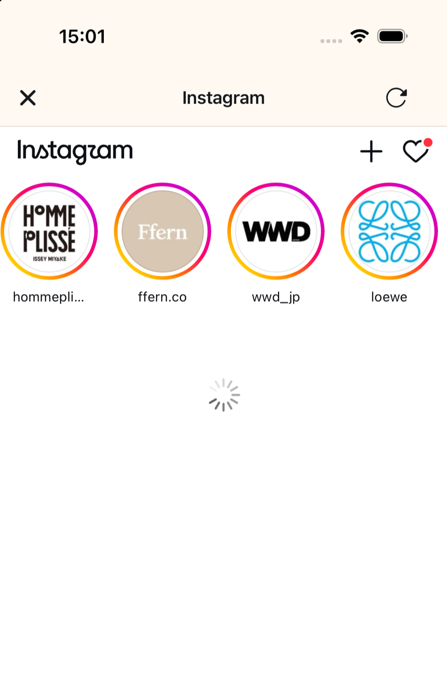

If I delete the Instagram app and use Safari, what happens to DMs and Reels?
If you delete the Instagram app and use instagram.com in Safari, your DMs still work, but Reels and Explore are still there and the app's notifications stop. To keep the Instagram app on your phone and still use Instagram without Reels, open it in minulo: hiding Reels, Explore and suggested posts is free, with no subscription, trial or minulo account, and locking the official app with Screen Time is free for up to 2 hours per block. Every tab but DMs leaves only your messages.
On the website, Reels and Explore only get a little less handy than in the app. To hide them in Safari itself you need a Safari extension such as Nope (free) or ScrollGuard. Without the app you also stop getting Instagram's notifications, and the app is back in a minute if you download it again.
- You don't need to delete the Instagram app. Install minulo and open Instagram inside it.
- Log in on Instagram's own login page. minulo does not receive or store your password.
- Tap the gear next to Instagram and turn on Reels tab, Explore tab and Suggested posts, or Every tab but DMs to keep only messages. This is free.
- Optional: in the Block tab, lock the official Instagram app with Screen Time, free for up to 2 hours per block. Open in minulo on its block screen takes you to Instagram without Reels.
Written by Ayumu Kitabayashi, the developer of minulo. Safari and Home Screen steps come from Apple's iPhone User Guide, checked on 2026-10-26. We could not open the text of Instagram Help's articles about the website that day, so we say where we couldn't confirm something. What the website shows is based on how minulo works with it, and extension details come from their App Store pages. Menu names can change with updates.
| Option | DMs | Reels and Explore | Catch |
|---|---|---|---|
| Instagram app as is | Yes | Always there | Adult accounts have no setting that hides the Reels tab |
| Delete the app, use instagram.com in Safari | Yes | Still there on the website | No notifications from the app. We couldn't confirm in Instagram Help which features the mobile website has |
| instagram.com on the Home Screen (Open as Web App) | Yes | Still there | The same website with its own icon |
| Safari with Nope | Its App Store page doesn't mention DMs | Hidden in Safari: Reels, Explore, Stories, autoplay | Free, with no in-app purchases. Safari only |
| Safari with ScrollGuard | DMs only mode, per its 1.2.1 release notes | Hidden in Safari | Free, with Pro in-app purchases. Safari only |
| minulo | Yes. Every tab but DMs leaves only DMs | Hidden: Reels and Explore tabs, suggested posts | This is free. Only inside minulo. No voice messages or calls |
Do Reels go away if you delete the Instagram app?
No. Deleting the app removes only the app. Instagram's website has the Reels and Explore tabs too, which is why apps that open the website, such as minulo, have switches to hide them. What you lose is the one-tap path from your Home Screen, and for some people that is enough.
Apple's guide says deleting an app removes it and its data from your iPhone, so your Instagram account and DMs stay. To delete it, touch and hold Instagram on the Home Screen, tap Remove App, then Delete App, then Delete. The catch: you can download it again in a minute, and instagram.com still opens in Safari. See delete, block or hide Reels.
Do DMs and notifications work on instagram.com?
DMs do. minulo opens the same website, and replying to DMs and posting photos work there. About Instagram describes sending a message by clicking Messages, then Compose, choosing people, Chat and Send. We couldn't confirm in Instagram Help exactly which message features the mobile website in Safari has.
Notifications are the bigger change. Instagram's notifications come from the official app, so without it you don't get them. Apple says some websites ask for permission to send notifications when you add them to the Home Screen; we couldn't confirm whether instagram.com does this on iPhone. If you rely on DM notifications, keep the app and see Instagram notifications for messages only.
Hide Reels in Safari with an extension
- Open Safari, tap the page menu button, then tap Manage Extensions.
- Search for an extension or tap Browse Extensions to look in the App Store, then tap Get.
- Go to Settings, tap Apps, then Safari, then Extensions. Tap the extension and turn on Allow Extension.
Nope is free with no subscriptions, in-app purchases or ads, per its App Store page. It is a Safari Web Extension for instagram.com and youtube.com that hides Reels, Shorts, Explore, Stories and autoplay, and it needs iOS 17 or later. ScrollGuard is free with Pro in-app purchases; it hides feeds, Reels, Stories and Explore on social media websites in Safari, and its 1.2.1 release notes add an Instagram DMs only mode. Both work only in Safari, so they don't touch the Instagram app if it is still on your phone.
Put instagram.com on your Home Screen
- In Safari, go to instagram.com.
- Tap the page menu button, then Share. If your Tabs layout is Bottom or Top, tap the Share button.
- Scroll down and tap Add to Home Screen.
- Turn on Open as Web App if you want it to open like an app, then tap Add.
It is still the same website, Reels and Explore included. We couldn't confirm whether Safari extensions also run when a website opens as a web app.
Use Instagram's website without Reels in minulo
- Install minulo and open Instagram inside it.
- Log in on Instagram's own login page. minulo does not receive or store your password.
- Tap the gear next to Instagram and turn on Reels tab, Explore tab and Suggested posts, or turn on Every tab but DMs to keep only messages.
- Optional: you don't need to delete the official app. In the Block tab, lock it with Screen Time, free for up to 2 hours per block. Its Open in minulo button takes you to Instagram without Reels.

Hiding is a setting, so it stays on until you change it. minulo Pro adds Sleep mode (set bed and wake times), Work mode (set workdays and hours), longer blocks, Hard Mode and a Daily limit.
Limits, so you can decide honestly: Reels are hidden only inside minulo, and the official app doesn't change. While minulo blocks an official app, that app's notifications don't arrive, and minulo sends none of its own. Since version 1.0.19, Pro users can turn on DM notifications (beta) so Instagram DM notifications still arrive while Instagram is blocked, except during Sleep mode, Work mode or after the daily limit. Posting Stories, voice messages and calls aren't available. minulo runs on iPhone and Mac (the Mac app works in Safari and Chrome), not Android, and it is new, with few ratings. See what minulo can't do.
If I delete the Instagram app and use Safari, what happens to DMs and Reels?
If you delete the Instagram app and use instagram.com in Safari, your DMs still work, but Reels and Explore are still there and the app's notifications stop. To keep the Instagram app on your phone and still use Instagram without Reels, open it in minulo: hiding Reels, Explore and suggested posts is free, with no subscription, trial or minulo account, and locking the official app with Screen Time is free for up to 2 hours per block. Every tab but DMs leaves only your messages.
Can I use Instagram for DMs without the app?
Yes. minulo opens Instagram's website with Reels, Explore and suggested posts hidden for free, and Every tab but DMs leaves only your messages, though only inside minulo. In plain Safari, instagram.com has DMs too, but the Reels and Explore tabs are still there.
Does instagram.com have Reels?
Yes. The website has the Reels and Explore tabs too, which is why apps that open the website, such as minulo, have switches to hide them. In Safari, an extension such as Nope can hide them.
Does deleting the Instagram app delete my account?
No. Apple's guide says deleting an app removes it and its data from your iPhone. Your Instagram account and DMs stay, and you can log in again on the website or after downloading the app again.
Will I get DM notifications without the Instagram app?
Not from the app, because Instagram's notifications come from the official app. Apple says some websites ask for permission to send notifications; we couldn't confirm whether instagram.com does this on iPhone.
Is there a free Safari extension that hides Instagram Reels?
Yes. Nope is free with no subscriptions, in-app purchases or ads, per its App Store page, and hides Reels, Explore and Stories on instagram.com in Safari. It works only in Safari.
Is minulo the same as using Instagram in Safari?
It uses the same website, so DMs, posting photos and comments work, and voice messages and calls aren't available. The difference is that minulo hides Reels, Explore and suggested posts, and it can lock the official app so you don't have to delete it.
Related questions
Sources
- About Instagram: Instagram Direct
- Apple: Get extensions to customize Safari on iPhone
- Apple: Bookmark a website in Safari on iPhone (Add to Home Screen)
- Apple: Remove or delete apps from iPhone
- App Store (US): Nope: Block Instagram Reels
- App Store (US): ScrollGuard: Block Reels
- minulo: What minulo can't do
- App Store (US): minulo